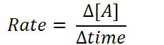
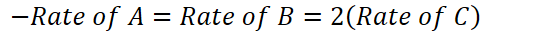
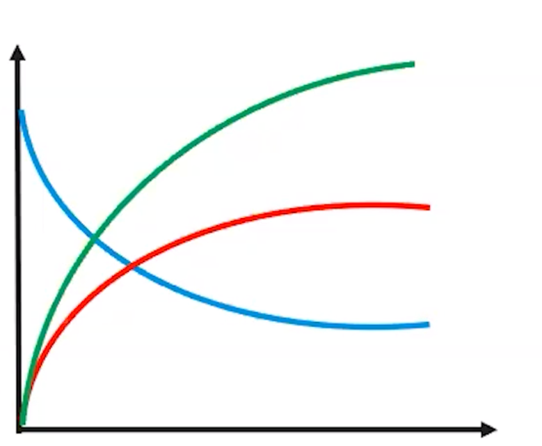
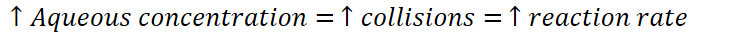

Kinetics - the study of the rates of a chemical reaction
The rate at which an amount of reactants is converted to products per unit of time
Rate of change is also determined by stoichiometry of the (balanced) chemical equation
Can be determined by other factors: concentration of reactants, temperature, surface area, catalysts, environment...
Rate of appearance/disappearance: [A] = concentration of A
{width="2.40625in" height="0.6666666666666666in"}
Rate is ALWAYS positive
A = B + 2C
{width="5.5625in" height="0.3333333333333333in"}
For every 1 A that disappears, 2 C appear (equation tells us this)
Element C appears twice as rapidly as element B
{width="3.7395833333333335in" height="3.0729166666666665in"}
Factors that affect reaction rate
The rate of a reaction is influenced by anything that affects the number or force of collisions
Concentration (gases & aqueous solutions)
If particles are in a tighter space, they will collide more often
{width="7.71875in" height="0.3333333333333333in"}
{width="6.90625in" height="0.3333333333333333in"}
Surface area (solids)
Collisions only occur on surface of solids
Increase the surface area => increase the rate of collision
More atoms exposed to reaction
Example: dissolving powdered vs rock sugar
Temperature
Particles move quicker =>
Collide more often
Collide with more force
Catalysts (5.11)